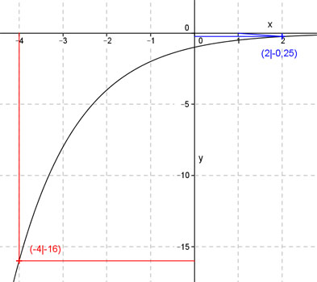

Aufgabe 9 Ergänzen Sie die Wertetabelle für den Graphen: y = -2-x x -4 0 2 y -16 1 -0,25 y = f(x) = -16 eingesetzt: -16 = -2-x |*(-1) 16 = 2-x mit 16 = 24 24 = 2-x Exponentenvergleich: -x = 4 |*(-1) x = -4 1 1 f(2) = -2-2 = - ----- = - --- = - 0,25 22 4 